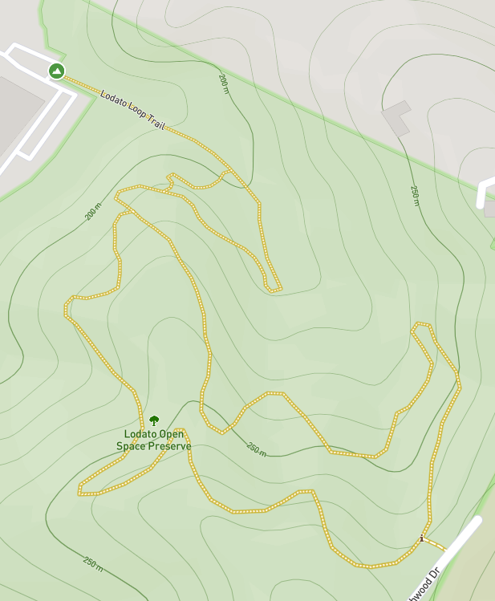

-
Full Description
The Lodato Park Loop Trail is a rare find. Unknown even to most locals, this hike reminds us of a miniature version of the extremely popular and well (some might say over) traveled trails at Muir Woods National Monument. We have often visited Lodato and met no one else on the trail, adding to the illusion that you are the first to enter this primeval forest.
Lodato's primary trail is well-defined and marked with sturdy, permanent signage. The trail twists and turns frequently, and includes several steep inclines. Diversions are abundant, and can add distance as well as difficulty to your hiking experience. Trash cans with dog waste disposal bags make this a popular place for those with four-legged companioins. If you marvel at the majesty and seek the solace of a redwood forest, then be sure to visit Lodato soon!
How to get there:
The trailhead of the Lodato Park Loop Trail can be found in the parking lot of an office complex located where Green Hills Road deadends. Navigate to 1800 Green Hills Road in Scotts Valley, Ca 95066, and you will find ample free parking in the paved lot. -
Trail Map
 -
Just the Facts
Address:
1800 Green Hills Road
Scotts Valley, CA 95066Admission fee: None
Difficulty level: Moderate
Main loop: 1.5 miles
Full hike: 2.1 miles
Elevation gain: 315 feet
Traffic: Low
Busier on weekendsRestrooms: None
Parking: Free in paved lot
Accessibility: Limited
Sections of trail are very narrowDogs: Allowed
Must be leashedHighlights:
Coastal Redwoods
Native wildflowersWarnings:
Poison Oak reported.
Trails can be treacherous
following heavy rainfall. -
Quick Peek
In case you're not already convinced that Lodato Park is worth the trip, why not take a quick peek at the hidden gems of Lodato Park? We've created a collection of some of our favorite photos and linked them here so that you can get a preview of what awaits you on your first visit. We're confident that you'll enjoy what you see. And you won't even have to leave home to do so!
Take me on a virtual hike at Lodato!